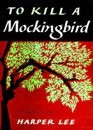
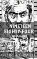
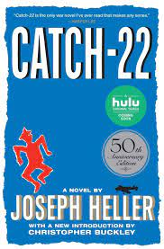

To Kill a Mockingbird

Novel by Harper Lee
To Kill a Mockingbird is a novel by the American author Harper Lee. It was published in 1960 and was instantly
successful. In the United States, it is widely read in high schools and middle schools. To Kill a Mockingbird
has become a classic of modern American literature, winning the Pulitzer Prize.
Nineteen Eighty-Four

Novel by George Orwell
Nineteen Eighty-Four is a dystopian social science fiction novel and cautionary tale written by English writer
George Orwell. It was published on 8 June 1949 by Secker & Warburg as Orwell's ninth and final book completed in
his lifetime
Jane Eyre

Novel by Charlotte Brontë
Jane Eyre is a novel by English writer Charlotte Brontë, published under the pen name "Currer Bell", on 16
October 1847, by Smith, Elder & Co. of London. The first American edition was published the following year by
Harper & Brothers of New York.
Catch-22

Novel by Joseph Heller
Fifty years after its original publication, Catch-22 remains a cornerstone of American literature and one of the funniest—and most celebrated—books of all time. In recent years it has been named to “best novels” lists by Time, Newsweek, the Modern Library, and the London Obse